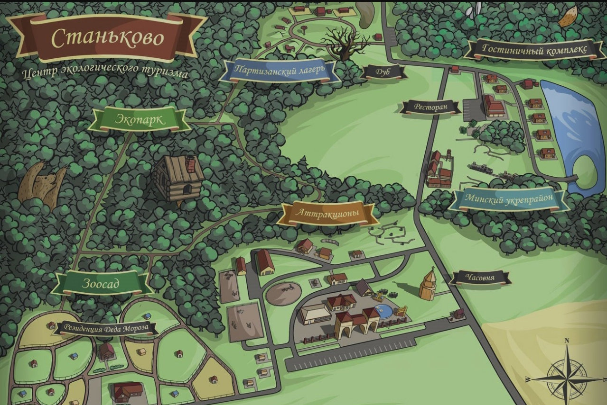

Миникарта
Станьково — деревня в Дзержинском районе Минской области Республики Беларусь. Населенный пункт относится к Станьковскому сельсовету и является его центром. Поселок стоит на живописной реке Рапусса в 40 км от Минска в юго-западном направлении. Станьково известно как родина партизана Марата Казея и центр экологического туризма благодаря одноименному музейному комплексу на окраине деревни.
Станьково известно со времён ВКЛ, с конца XV века[5][6][7]. Изначально принадлежала Дорогостайским, затем Радзивиллам, а в 1545 году, имение Станьково — владение Ю.Володковича и находится в Минском повете, Минского воеводства. С 1567 года — шляхетская собственность. В 1588 года — местечко, 30 дворов, действовала мельница, костёл, церковь, рынок. Насчитывалось 3 улицы: Койдановская, Минская, Негорельская.
Довольно красивое место, с почти нетронутой природой. В этом месте ходит много легенд про озеро и другие не менее интересные и загадочные места. read...
| Контакты |


|